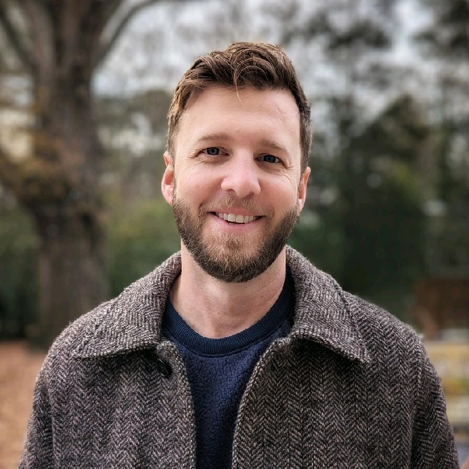

Hi, I'm Carey
I have an affinity for creative automation, untangling messy workflows, and side projects that somehow turn into full-blown rabbit holes. Efficiency is my love language.

Projects
About
I'm a CPA with over 15 years of experience, including 8 years focused on revenue accounting in the fast-paced world of SaaS. I like making things work better, whether that means automating a clunky workflow, building internal tools, or eliminating one more pointless mouse click. I'm big on smart processes, creative problem-solving, and using technology to make finance a little less painful and a lot more efficient.
Outside of work, I’m a husband, a dad of two, and someone with probably too many hobbies. I’m usually reading something interesting, chasing live music, or brainstorming new ideas. I believe good work comes from a mix of curiosity, technical skill, and a healthy desire to keep improving things, even just 1% at a time.
Contact
Feel free to reach out on any platform below.